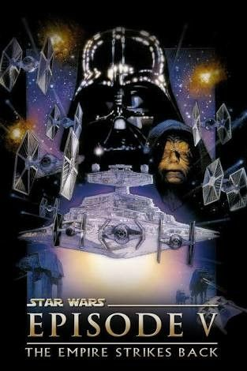

Resumo dos Filmes
Star Wars- Episódio I. A Ameaça Fantasma.

É o ano de 32 ABY e uma disputa comercial entre a Federação de Comércio e o planeta Naboo levou à um bloqueio ao planeta. Chanceler Finis Valorum da República Galáctica secretamente envia dois Jedi, Qui-Gon Jinn e seu Padawan Obi-Wan Kenobi, como embaixadores à nave-capitânia Saak'ak para encontrar com o Vice-rei da Federação de Comércio Nute Gunray a fim de resolver a disputa.A mando do misterioso Darth Sidious, com quem mantém relação secreta, a Federação de Comércio ordena a morte dos dois Jedi e inicia a Invasão de Naboo. Assim sendo, a nave dos embaixadores, a Radiant VII, é destruída. Qui-Gon e Obi-Wan escapam da tentativa de assassinato da Federação enfrentando droides de batalha mas se vêem obrigados a fugir para Naboo.
Na superfície do planeta, os Jedi encontram o nativo local Jar Jar Binks que, após ter sua vida salva por Qui-Gon, os leva para Otoh Gunga, uma cidade Gungan debaixo d'água, para escapar do exército da Federação de Comércio. Enquanto isso, a Federação invade Naboo e captura a líder do planeta, Rainha Amidala. Os Jedi têm uma audiência com o líder Gungan, Rugor Nass, e pedem o apoio dos Gungans para ajudar as pessoas de Naboo. Nass não se mostra disposto a ajudar, contudo oferece um bongo para que os Jedi cheguem à Theed. Ao chegarem à capital de Naboo, os Jedi, acompanhados de Jar Jar Binks, resgatam a Rainha Amidala do exército da Federação de Comércio. Eles planejam ir até Coruscant, o planeta capital da República Galáctica, para pedir ajuda ao Senado.
A nave da Rainha sofre danos graves ao tentar furar o bloqueio de naves da Federação de Comércio que orbita Naboo. No entanto um droide chamado R2-D2 heroicamente consegue fazer reparos suficientes, possibilitando a entrada no hiper-espaço. Ao saber da fuga, Darth Sidious envia seu aprendiz, Darth Maul, para matar os dois Jedi e capturar a Rainha.
Devido ao ataque, a nave é forçada a fazer escala no planeta deserto de Tatooine para reparos. Enquanto procuram pelas partes necessárias, eles fazem amizade com o pequeno Anakin Skywalker, um garoto escravo, cujo mestre é Watto, um Toydariano dono de um ferro-velho. Anakin tem dons para pilotagem e mecânica (ele construiu quase completamente um droide chamado C-3PO). Qui-Gon Jinn sente uma forte presença da Força em Anakin, e percebe que ele possa ser o Escolhido, que irá trazer equilíbrio à Força.
Star Wars- Episódio II. Ataque dos Clones.

A República Galáctica está em crise. Um movimento separatista (secretamente formado pelo ex-Jedi Conde Dookan) ameaçou a paz. A Senadora Padmé Amidala, ex-Rainha de Naboo, retorna ao Senado Galáctico para oferecer um voto contra a criação de um Exército da República, até porque não há Jedi suficientes para manter a paz e ordem na Galáxia. Em sua chegada, ela escapa de um atentado a assassinato. Como resultado, o Supremo Chanceler Palpatine pede que os Jedi Obi-Wan Kenobi e Anakin Skywalker a protejam até a votação.
Naquela noite, uma misteriosa caçadora de recompensas faz outro atentado à vida de Amidala, e o Conselho Jedi pede a Obi-Wan para seguir a assassina. Enquanto isso, é dado a Anakin a tarefa de proteger a Senadora e escoltá-la de volta para seu planeta natal de Naboo. Anakin recebe bem a oportunidade, como ele ficava irritado com as críticas de Obi-Wan, e está contente de estar sozinho nessa missão. O Representante Jar Jar Binks assume as tarefas da Senadora durante sua ausência.
Durante a investigação, Obi-Wan é levado para o misterioso planeta Kamino (que não estava nos arquivos da República), onde ele descobre um exército de clones secreto sendo desenvolvido para a República. Os nativos dizem que o exército foi pedido há dez anos antes por um Jedi chamado Zaifo Vias — acreditado morto pelo Conselho Jedi. Um caçador de recompensas chamado Jango Fett foi contratado para ser a predefinição dos clones. Obi-Wan encontra Fett em Kamino, e acredita ser ele o assassino que ele procura. Depois de uma tentativa de captura falha de Obi-Wan, ele coloca um dispositivo de rastreamento em sua nave e o segue para o planeta Geonosis.
Em Geonosis, Obi-Wan escuta uma conversa entre Conde Dookan e Vice-rei Nute Gunray, e descobre que eles estão por trás do movimento separatista e construíram um novo exército de droides. Ele também descobre que Gunray estava por trás da tentativa de assassinato de Padmé Amidala, como vingança da Batalha de Naboo. Obi-Wan então manda uma mensagem gravada para o Conselho Jedi para informá-los sobre o que acabou de ouvir um pouco antes de ser capturado.
Star Wars- Episódio III. A Vingança dos Sith.

Em Coruscant, Anakin é elogiado por seu heroismo. Ele se encontra secretamente com a Senadora Padmé Amidala, e eles dividem beijos na sombra, mantendo seu amor em segredo. Ela lhe revela que está grávida. Mais tarde, Anakin acorda em pânico, coberto de suor. Ele conta a Padmé que esteve sonhando com ela morrendo durante o parto, e promete que não deixará que este sonho se torne realidade.Chanceler Palpatine solicita a presença de Anakin e eles se encontram no Escritório do Chanceler em Coruscant. O Senado garantiu ao Chanceler mais poderes de emergência na guerra, dando controle direto para ele do Conselho Jedi. Palpatine confessa a Anakin seu medo, desconfiança e descaso dos Jedi. Ele aponta Anakin para ser seu representante pessoal no Conselho Jedi.
O Conselho Jedi aceita o apontamento de Anakin, mas não lhe concede o nível de Mestre. Anakin reage com raiva, insistindo que ele é mais poderoso que qualquer um no Conselho. O Conselho continua a discutir questões sobre a guerra. É decidido que Anakin será o encarregado de proteger e espionar o Chanceler, e Yoda levará um batalhão de clones para reforçar os Wookiees em Kashyyyk. Anakin fica frustrado e desapontado.Depois, Obi-Wan avisa para Anakin que o Conselho quer que ele espione o Chanceler e avise sobre todos os seus passos. Anakin fica confuso, pois é leal ao Chanceler e amigo de Kenobi. Obi-Wan fica infeliz com a situação.
Na Casa de Ópera Galáxias no Distrito Uscru, Anakin se junta a Palpatine e assiste o Ballet Mon Calamari apresentar "Squid Lake". Palpatine continua a seduzir Anakin para o lado sombrio, fazendo com que ele desconfie dos Jedi dizendo que a Ordem quer dar um golpe na República e tomar seu lugar. Ele também conta a história de Darth Plagueis, um Lorde Sith que usava a Força para salvar pessoas da morte e que foi morto por seu aprendiz enquanto dormia. Quando Anakin pergunta se é possível aprender o poder de parar a morte, Palpatine simplesmente responde: "Não como um Jedi," alienando Anakin ainda mais da Ordem Jedi.
Star Wars- Episódio IV. Uma Nova Esperança.
Dezenove anos após os eventos de Vingança dos Sith, o Império Galáctico sob a liderança de Imperador Palpatine controla a Galáxia com força. O Império não funciona sem sua resistência, de qualquer forma. O Tantive IV está carregando uma informação preciosa, vital para a Aliança Rebelde. Mas Darth Vader, Lorde Negro dos Sith e seu mestre suspeitavam há um bom tempo das suas lealdades, e sua nave é interceptada por seu Destróier Estelar classe Imperial, o Devastator, e é invadido pelos stormtroopers de Vader. Antes de sua captura, Leia coloca informações vitais na base de dados de R2-D2. R2-D2 e C-3PO escapam em um pod de emergência, e caem no planeta remoto e deserto de Tatooine. R2-D2 e C-3PO são "recuperados" por Jawas após terem sido separados.
Os droides são comprados pelo fazendeiro de umidade Owen Lars e seu sobrinho, Luke Skywalker. R2-D2 escapa da casa de Lars na procura de um Obi-Wan Kenobi, quem o droide dizia ser o proprietário. Luke e C-3PO acham R2 no dia seguinte um pouco antes de serem atacados pelo Povo da Areia. Luke e seus droides são salvos por Obi-Wan Kenobi ou, como Luke o conhece, Ben Kenobi. Obi-Wan leva Luke para sua casa.
Luke recebe o sabre de luz de seu pai, com Obi-Wan relembrando sua antiga amizade com o pai de Luke. Luke fica sabendo que um lorde Sith chamado Darth Vader traiu e matou seu pai. Após descobrir a mensagem de Princesa Leia carregada por R2-D2, Obi-Wan tenta convencer Luke a acompanhá-lo à Alderaan, mas Luke se recusa a ir até descobrir que seu tio e tia foram mortos brutalmente por stormtroopers enquanto procuravam pelos droides. Luke, Obi-Wan, e os dois droides viajam até Mos Eisley para achar passagem para Alderaan, o planeta natal de Princesa Leia.Por 17.000 créditos, o contrabandista Han Solo e seu co-piloto Chewbacca concordaram em levar os quatro para Alderaan a bordo de sua nave, o Millennium Falcon. Após pequenas brigas com o Império e Jabba o Hutt, a Falcon escapa do Bloqueio Imperial em Mos Eisley e Han coloca o curso para Alderaan.
Star Wars- Episódio V. O Império Contra Ataca.
Três anos após os eventos de Star Wars Episódio IV: Uma Nova Esperança, os Rebeldes foram forçados a fugir de sua base em Yavin e estabelecer uma nova no planeta gelado de Hoth. Darth Vader, continua sua busca por Luke Skywalker, enviando milhares de droides sondas de reconhecimento pela galáxia. Uma das sondas chega a Hoth e começa a examinar o planeta. Luke Skywalker, em um patrulha com seu tauntaun, descobre a sonda, a qual ele se engana pensando ser um meteorito. Após relatar a Han Solo, ele é atacado por uma criatura misteriosa e fica inconsciente. Quando Luke não volta para a Base Echo, Han Solo pega um tauntaun e sai para buscá-lo. Luke se ve acordado de cabeça para baixo em uma caverna de gelo, vendo um perigoso Wampa comendo seu tauntaun. Usando a Força, Luke consegue puxar seu sabre de luz até sua mão. Após ativá-lo, ele corta o que estava o prendendo e então corta o braço do Wampa. Ele tenta voltar para a Base Echo a pé, mas não consegue e cai inconsciente no chão. De repente, ele vê o Espírito da Força de Obi-Wan Kenobi na sua frente, que pede para ele ir à Dagobah para ser treinado por Yoda, o Jedi que o treinou. Depois que o espírito desaparece, Han chega a Luke, desmaiado. Para manter Luke quente, Han usa o sabre de luz do garoto para cortar o estômago do tauntaun morto e o deixou ao lado. Han finalmente contata a Base Echo por seu comlink, e eles são resgatados por pilotos Rebeldes em snowspeeders. Quando chegam de novo à base, Luke é posto em tratamento de Bacta para recuperação. Leia tenta convencer Han para ficar com os Rebeldes.
Darth Vader e as Forças Imperiais mudaram o curso para o sistema Hoth para montar o ataque. Pouco tempo depois, Luke percebe que tem de deixar Hothm e então diz adeus a Chewbacca e Solo. Quando as forças Imperiais entram no sistema Hoth, Vader descobre que o Almirante Ozzel saiu da velocidade da luz tão perto do planeta que os Rebeldes foram alertados da presença da frota. Por comunicação em vídeo, Vader estrangula Ozzel até a morte por suas ações, e então aponta Capitão Piett o novo Almirante.
Star Wars- Episódio VI. O Retorno Jedi.

Luke Skywalker (que não terminou o treino Jedi) e a Princesa Leia vão a Tatooine ao resgate de Han Solo, mantido prisioneiro por Jabba o Hutt, um perigoso gangster intergaláctico. Enquanto isso, o Império reconstrói secretamente uma nova Estrela da Morte na lua de Endor ao mesmo tempo que o Imperador esboça um plano para acabar com a Aliança Rebelde de uma vez por todas. Darth Vader, sob as ordens do Imperador prepara-se para reencontrar e trazer o seu filho à sua presença, para poder assim consumar o seu objectivo de destruir a Aliança Rebelde e o último cavaleiro Jedi de um só golpe.
Após resgatar Han Solo, a Aliança Rebelde, que recentemente havia obtido informações sobre o projeto para a nova Estrela da Morte, engendra um plano para sufocar a agenda imperial: estando o esqueleto metálico da nova Estrela da Morte ainda parcialmente construído e apenas ligeiramente protegido por um escudo defletor interplanetário, emitido através da lua de Endor, a partir da qual a estação semi-construída orbita, uma pequena equipa de assalto deverá supostamente passar o bloqueio planetário através de códigos imperiais fornecidos pela rede de espionagem Bothan, desativar a estação emissora do escudo defletor e aguardar a chegada da frota rebelde para finalizar a destruição da Estrela da Morte, antes de esta atingir o nível de funcionalidade para se auto-defender. Contudo, a Aliança Rebelde cai numa armadilha feita pelo próprio imperador, pois tanto a informação do estado atual da nova Estrela da Morte como os códigos de entrada na lua eram parcialmente falsos, com o objectivo de atrair a frota principal da aliança rebelde à sua destruição. Ainda assim, o pequeno transporte consegue passar o bloqueio e infiltrar-se na lua de Endor.
É lá que, os rebeldes conhecem os Ewoks, uma raça de seres semelhantes a pequenas ursos, com um estilo de vida ainda primitivo e organização social tribal. Contudo, os Ewoks mostrar-se-iam essenciais para a destruição da central emissora, inicialmente protegida por uma legião das melhores tropas imperiais, que, segundo o imperador, já aguardavam o assalto rebelde. Através de variadíssimas armadilhas e tácticas de emboscada, os nativos Ewoks, conseguem surpreender as fileiras imperiais e, juntamente com o pequeno exército rebelde, tomar a estação emissora do escudo defletor que é detonada de seguida.
Star Wars- Episódio VII. O Despertar da Força.
Aproximadamente 30 anos após a destruição da segunda Estrela da Morte, a Aliança Rebelde transformou-se na Nova República, mas remanescentes do Império Galáctico reorganizaram-se como a Primeira Ordem, cujo crescimento é combatido pela Resistência da República.
Poe Dameron, um piloto da Resistência, é mandado ao planeta Jakku pela General Leia Organa para obter um mapa que, acredita-se, indica a localização de Luke Skywalker, o último Jedi, que está desaparecido há anos. Kylo Ren, um poderoso conhecedor do lado sombrio da Força e discípulo do Líder Supremo Snoke, está tentando roubar o mapa. Poe viaja até o planeta Jakku para tentar reaver o mapa. Quando Kylo Ren o ataca, ele coloca o mapa em seu droide, BB-8, e o manda fugir para longe. Kylo Ren captura Poe e ordena o assassinato de todos no vilarejo onde ele foi encontrado. Um stormtrooper fica ultrajado com a brutalidade da Primeira Ordem e deserta para ajudar Poe, que passa a chamá-lo de Finn, uma vez que o stormtrooper não tem um nome, apenas um número: FN-2187. Poe precisa voltar a Jakku para reaver seu droide, porém a nave é atingida e cai, e Poe presumidamente morre. Enquanto isso, BB-8 fica na posse de Rey, uma jovem que sobrevive catando lixo e espera pelo retorno de seus pais. Após Finn encontrar Rey e BB-8, a Primeira Ordem os localiza e os três escapam do planeta numa velha nave, a Millennium Falcon.
Na fuga com a Millennium Falcon, esta é capturada por Han Solo e Chewbacca, de quem a nave havia sido roubada há alguns anos. Após escaparem de um ataque de piratas que demandam o pagamento de uma dívida, eles viajam ao planeta Takodana para encontrar Maz Kanata, uma velha pirata de mil anos de idade, que eles acreditam que pode ajudar. No castelo de Maz, Rey é atraída pela Força até o porão, onde acha o sabre de luz que pertenceu a Anakin Skywalker e posteriormente ao seu filho, Luke. Ao tocar no sabre, ela tem uma visão do passado e futuro através da Força, da qual ela foge assustada. Finn pega o sabre de luz. Quando a Primeira Ordem ataca o castelo, Rey é capturada por Kylo Ren, enquanto os outros escapam graças à chegada das naves da Resistência, liderados por Poe, que havia de fato sobrevivido da queda em Jakku. Eles vão para a base da Resistência em D'Qar, onde descobrem que Han Solo e Leia se separaram após seu filho, Ben Solo, que estava sendo treinado por Luke para ser um Jedi, ter se voltado para o lado sombrio da Força e se tornado Kylo Ren. O mapa, entretanto, é apenas parcial. Enquanto isso, Kylo Ren usa a Força para interrogar Rey e obter o mapa direto de sua mente, mas é impedido pela forte conexão de Rey com a Força, que ela usa para escapar.
Star Wars- Episódio VIII. Os Últimos Jedi.
Integrantes da Resistência liderados pela General Leia Organa abandonam sua base principal em D'Qar quando uma frota da Primeira Ordem alcança o planeta onde eles estão. Após a batalha, as naves da Resistência fogem na velocidade da luz. Leia repreende Poe Dameron por um contra-ataque que, embora bem-sucedido, causou a perda de muitas vidas e naves; ao mesmo tempo, o Líder Supremo Snoke repreende o General Hux por ter deixado a Resistência escapar. Hux, entretanto, está usando um rastreador que consegue seguir naves através do hiperespaço, e inicia uma perseguição com a Resistência, que consegue manter distância, mas o combustível das naves, que também mantém o funcionamento dos escudos, está perto de acabar. Durante um ataque, Kylo Ren hesita em atirar na nave líder da Resistência ao sentir que Leia, sua mãe, está lá, mas caças TIE atiram e destroem a ponte de comando, matando muitos dos líderes que lá estavam, incluindo o célebre Almirante Ackbar. Leia consegue se salvar usando a Força, mas fica inconsciente e severamente ferida, e assume o comando a Vice-Almirante Amilyn Holdo. Desaprovando sua estratégia passiva, Poe, Finn, BB-8 e a mecânica de naves Rose Tico pensam num plano para desarmar o dispositivo de rastreamento da Primeira Ordem e contactam Maz Kanata, que indica um mercenário decodificador que está em uma cidade-cassino chamada Canto Bight, no planeta Cantonica, e que usa uma flor vermelha na lapela.
Tendo chegado em Ahch-To com Chewbacca e R2-D2 a bordo da Millenium Falcon, Rey encontra Luke Skywalker. Luke, entretanto, mesmo após saber da morte de Han Solo, frustra suas expectativas recusando-se a ensiná-la por causa de sua frustração com Ben Solo – que se tornou Kylo Ren. Escondida de Luke, Rey começa a se comunicar com Kylo Ren através de um vínculo da Força que existe entre eles que permite que eles se vejam, conversem, e toquem pela Força. Convencido por R2-D2, que lhe mostra a gravação original de Leia pedindo ajuda a Obi-Wan Kenobi, Luke resolve iniciar Rey nos caminhos da Força, mas também conta a ela seus erros como Mestre Jedi. Luke e Kylo contam a Rey diferentes versões do incidente que levou Kylo para o lado sombrio da Força e Luke para o exílio. Sem conseguir convencer Luke a juntar-se à Resistência, Rey vai embora de Ahch-To sem ele, disposta a confrontar Kylo Ren sozinha, pois ainda sente que há luz dentro dele. Luke vê o espírito de seu mestre, Yoda, que destrói o templo Jedi de Ahch-To e lhe ensina que o fracasso é capaz de ensinar muito mais que o sucesso, e que ele não deve perder Rey.
Star Wars- Episódio IX. Os Últimos Jedi.
Um ano após a Batalha de Crait, Líder Supremo Kylo Ren lidera um ataque cruel aos Colonos de Alazmec em Mustafar, procurando o Localizador de propriedade do seu avô, Darth Vader. Ren quer usar o dispositivo como um guia em sua caçada ao Imperador Palpatine revivido, a identidade pública do Lorde Sith Darth Sidious, a quem ele vê como uma ameaça ao seu poder. O Líder Supremo massacra muitos cultistas de Alazmec ao lado de seus stormtroopers antes de recuperar o dispositivo e colocá-lo em sua nave, permitindo que seu poder sombrio o conduzisse através das tempestades de energia carmesim que cercam o lendário mundo Sith de Exegol.
Desembarcando na base de uma enorme cidadela, Ren acende seu sabre de luz e entra. Ele desce em uma plataforma flutuante até uma vasta câmara forrada com estátuas gastas de lendas dos Sith. Enquanto ele desce em suas profundezas, ele ouve Sidious dizendo que Snoke o treinou bem. Ren responde que ele havia o matado, mas a voz responde que ele criou Snoke. Raios "dançaram" ao redor do jovem adepto do lado sombrio enquanto ele ouvia as palavras provocadoras, falado em uma voz em transição da do próprio Sidious para a de Snoke e, finalmente, para a de Vader: "Tenho sido todas as vozes...que você ouviu...em sua mente."
Ren, inabalável, prossegue na cidadela, caminhando por algum tempo entre as efígies imponentes. Com o caminho iluminado pelo sabre de luz, o jovem acaba vagando em um labirinto de equipamentos desconhecidos, tendidos por acólitos vestidos. Cilindros altos cheios de um líquido dourado doentio sustentam corpos imóveis e incompletos com o rosto mutilado do Snoke morto; confirmando as palavras anteriores do Imperador. Entre essas máquinas, ligadas por inúmeros tubos e fios a máquinas de apoio e sustento, está a figura emaciada e decadente do próprio Sidious.